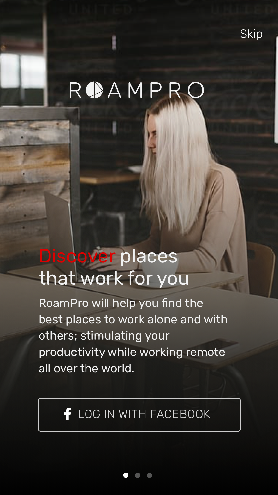

USER RESEARCH
understanding user's expectations & needs
One of my first tasks was to clearly define RoamPro's potential user base. What type of people and potential visitors would we want to attract to the site? It was important to pinpoint how these users behaved and identify several possible user cases for the app.
With common scenarios in place, I was able to define detailed personas using the data I collected and user surveys I conducted. Please view on the left.
With common scenarios in place, I was able to define detailed personas using the data I collected and user surveys I conducted. Please view on the left.
COMPETITIVE ANALYSIS
learning from existing solutions
To do this, I set up a competitive analysis chart of Google Trip, TripIt, and Trip Advisor comparing ease of navigation, effectiveness of UI, task facilitation, and other features such as map view, see ratings, itinerary development and tracking.
USER FLOW
SEEING IT IN THE CONTEXT OF A USER
I began mapping out the IA (information architecture) of the app. The goal here was creating refined flows that a user would intuitively step through to complete necessary tasks. I used Draw.io to build my finalized user flows like the one you see to the left. See full diagram here
HIGH FIDELITY WIREFRAME
PUTTING IT ALL ON SCREENS
I first sketched out the wireframe on paper, and then quickly transferred them to Balsamiq to get a clickable prototype for usability testing. After several iterations, I finalized the wireframe in sketch.

NAVIGATION
SETTING THE RIGHT ATMOSPHERE AND EXPECTATION
The onboarding was crafted to be minimalistic, yet inspiring, to cater towards the new age of sophistication. Onboarding screens walk users through the setup process to ensure a smooth transition for new users. Skipping is always an option.

NAVIGATION
MAIN NAVIGATION & SEARCH FUNCTIONS
The most important part about producing RoamPro was crafting a product that was clear and simple to use. Pictures are heavily utilized in the community feed to produce quick, emotional responses from users. Keeping the page de-cluttered was also a main priority in this project.
FEATURES
Full access to curated city guides
Find nearby coffee shops and co-working spaces
See availability of wifi, dining options, credit cards and more
Explore the community feed and get suggestions from explorers in every city
Find nearby coffee shops and co-working spaces
See availability of wifi, dining options, credit cards and more
Explore the community feed and get suggestions from explorers in every city
FEATURES
CURATED FEED
Explore the best cafes and co-working spaces a city has to offer a digital nomad, sorted by distance. Swipe left to view the map and share finds on social media.
FEATURES
ACCESS TO CITY GUIDES
Our city guides help users understand the culture of every city from the inside. Get to know the different neighborhoods, how they originated, and explore the best of what they have to offer – explicitly curated by our RoamPro team.
Included cities: Oslo, London, Berlin, Los Angeles, Denver, Barcelona, New York, Cape Town, + more
Included cities: Oslo, London, Berlin, Los Angeles, Denver, Barcelona, New York, Cape Town, + more
FEATURES
SEARCH OUR COMMUNITY FEED
Explore articles about our communities latest discoveries. Narrow your search by choosing a specific city and interest or randomize the search for popular reads and new ideas.
FEATURES
PRIMARY FUNCTIONS
Switching from RoamPro's community feed to our currated guides is simple. Just tap the menu bar to reveal the portal options. Click to switch between the two.

BRAND LOGO
logotype & logomark
Since the company's identity had not yet been well defined, my aim was to hone in on the core values — enabling professionals to work more efficiently while also fulfilling their need to travel more regularly. “RoamPro” stands for roaming professionals. Early logo designs included a mountainscape to signify exploration. That idea morphed into a more universal design, which signifies a globe. Logomark will be used when space is limited.
COLOR PALETTE
CHOOSING THE BEST COLOR FOR THE BRAND
I wanted the brand to be sophisticated, and direct. The chosen colors are bold, to show users there is no hiding. They can be confident we are showing them exciting, never-before-seen material that RoamPro’s community will love to see.
TYPOGRAPHY
KEEPING THE DESIGN SYSTEMATIC
Keeping typography style systematic helps set a good visual hierarchy. This provides users with a clear navigation cue throughout all screens in the application.